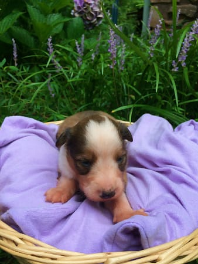
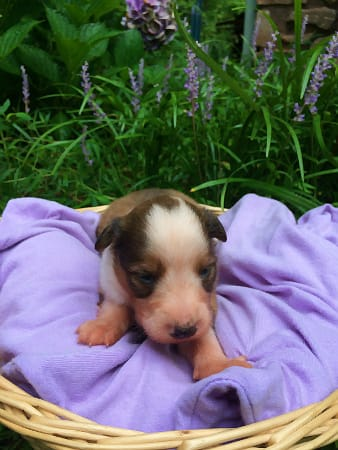
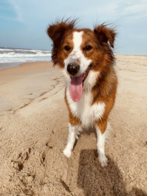
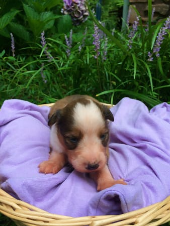

Louisa (call name Scout) is in Virginia. Her owner is the most active owner from the 2018 litter on the OTSC facebook pages so you can see pictures of Scout there often. Scout didn't enjoy sleeping alone at night initially but within a week of moving to her new home, I got this note: " I just wanted to check in and let you know how happy we are! Scout is amazing. She is doing great in her crate at night now. We're all rested up and settling into a regular routine. She learns so fast it's just amazing. Thank you again for allowing me to give her a good home."
When Scout was about 8 months of age, her owner shared this response: "I am so in love with this puppy! She is exactly what I was hoping for and then some. I’ll write a few paragraphs to address different topics. Her temperament is kind and loving. She was never left alone for more than thirty minutes until she was six months old, so she met literally hundreds of people. We took her to target, Walmart, colonial Williamsburg, you name it. She never learned to be scared of men, people in hats, people of different races... she loves everyone! She may not have needed all the exposure but I didn’t want to take a chance.
Scout loves children the best. I’ll share two quick stories that really show how great she is with people... she wants to interact with every child she sees, and she just knows how to approach them in the right way. Whenever we meet a really young baby or toddler Scout crouches down really low to the ground and just creeps up. She never has been rambunctious with little ones. Also, I have an 81 year old aunt that is blind. No matter how energetic this puppy is feeling, she is quiet and still for my Aunt to pet her and snuggle her. Even when she was two months old!
We have a favorite place to walk each day down at Jamestown beach, and I can let Scout off lead in a five acre field surrounded by woods. She stays close and has never run off one time. She’s jumped up sleeping deer and never gave chase. We can pass ducks and she’ll watch them but won’t follow. I taught her a recall game I’ve always used with my herding dogs and she learned it the very first day and has obeyed every single time. Scout has completed two obedience classes so far and we just signed up for a third. She should be ready for her canine good citizen test at the end of it. We are also planning on therapy certification for good measure. She has such a keen sense for disabilities and is so perfect with kids I’d hate to waste that gift!
We have had very few challenges so far... Scout did show some resource guarding with my Mom’s Shihtzu which blew me away. She has never ever been that way with us or our cat! On the same trip, she met my brothers gigantic coondog x Dobie and was completely respectful even with food. She also discovered her herding instinct with the Shihtzu. It was hilarious! She followed her around at times and would boop her right in the butt. She never opened her mouth while doing this, and I was excited to see it!
Scout was also a breeze to housebreak... she’s only had a few accidents in the house and about once a month. She hasn’t had one in about two months now. We have taken several overnight trips with her and she is a pro in the hotel and elevator. The last time we were on the third floor and I was scared she might pee before we made it outside first thing in the morning, but she held it every time.
I will say Scout's a little stubborn lol! Not too bad, but I learned from the get go that if she set her mind to do something I had to stay on top of her. She has had lots of favorite things like toilet paper, paper towels, dryer lint, socks, you name it! After a week or so she’ll lose interest in whatever her favorite thing is and decide she loves something else. She is very patient and calculating about these things. I swear she watches me until I’m not paying attention and bam! Here she comes with her current obsession. She also thinks this game is super hilarious because she marches right up for me to fuss at her and take it out of her mouth! She cracks me up every day!
Scout can’t go to dog daycare without being spayed, so I worried about socializing her with dogs but she has been great. She loves to meet new dogs and make new friends. We are still considering breeding her. Scout is by my side 100% of the time. If I leave the room she is right beside me. Not underfoot, but always with me. I love that about her. I hope this wasn’t too long lol... as you can tell I’m totally in love with this pup. And I’d like to thank you again for choosing us. She is just perfect.”
